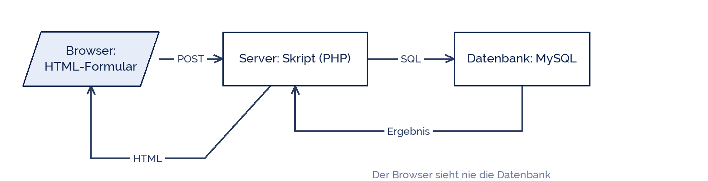

RyanK14
RyanK14
Good morning!
Nur das Schöne wird die Welt retten!
Fjodor Dostojewski
Nicht verzagen, Doc Alvers fragen!
Informatik — Grundkurs 13
Die Seite bekommt ein Gedächtnis
Datenmodell, Anbindung und Formulare — vom Browser bis in die Tabelle
Nicht verzagen, Doc Alvers fragen!
Kapitel 01
Das Konzept
Wer macht was
Nicht verzagen, Doc Alvers fragen!
Die drei Schichten
Der Browser spricht nie direkt mit der Datenbank — immer über das Serverskript
Das ist derselbe Gedanke wie beim DBMS: eine Stelle, die aufpasst

Nicht verzagen, Doc Alvers fragen!
Wer wofür zuständig ist
| Schicht | Aufgabe | Sprache |
|---|---|---|
| Browser (Client) | Anzeige, Eingabe entgegennehmen | HTML, CSS, JS |
| Server | prüfen, rechnen, Datenbank befragen | PHP, Python, Java |
| Datenbank | speichern, suchen, Integrität sichern | SQL |
Prüfungen im Browser sind Bequemlichkeit — die verbindliche Prüfung passiert auf dem Server
Denn wer den Browser umgeht, umgeht auch dessen Prüfung
Nicht verzagen, Doc Alvers fragen!
Kapitel 02
Das Formular
Daten vom Nutzer zum Server
Nicht verzagen, Doc Alvers fragen!
Ein Formular, das speichert
<form action="speichern.php" method="post"> <label for="name">Vereinsname</label> <input id="name" name="name" type="text" required maxlength="80"> <label for="ort">Ort</label> <input id="ort" name="ort" type="text" required> <button type="submit">Speichern</button> </form>
Nicht verzagen, Doc Alvers fragen!
GET oder POST?
| GET | POST | |
|---|---|---|
| Daten stehen | in der URL | im Nachrichtenkörper |
| sichtbar | ja, auch im Verlauf | nein |
| Länge | begrenzt | praktisch unbegrenzt |
| geeignet für | Suchen und Filtern | Speichern und Ändern |
Faustregel: GET liest, POST verändert
Ein Löschlink per GET ist ein Klassiker unter den Fehlern — Suchmaschinen klicken ihn
Nicht verzagen, Doc Alvers fragen!
Kapitel 03
Die Anbindung
Vorbereitete Anweisungen
Nicht verzagen, Doc Alvers fragen!
Speichern - richtig gemacht
<?php
$pdo = new PDO('mysql:host=localhost;dbname=vereine;charset=utf8mb4',
$benutzer, $passwort);
$name = trim($_POST['name'] ?? '');
$ort = trim($_POST['ort'] ?? '');
if ($name === '' || $ort === '') {
die('Bitte alle Felder ausfuellen.');
}
$stmt = $pdo->prepare('INSERT INTO Verein (name, ort) VALUES (?, ?)');
$stmt->execute([$name, $ort]);
?>Nicht verzagen, Doc Alvers fragen!
Warum prepare und execute?
Zusammengeklebtes SQL erlaubt SQL-Injection: Eingaben werden zu Befehlen
prepare schickt die Anweisung ohne die Werte an die Datenbank
Die Werte kommen getrennt hinterher und können nie als Befehl gelesen werden
Das ist keine Stilfrage, sondern die Grundregel jeder Datenbankanbindung
Und die Zugangsdaten stehen nicht im Quelltext, sondern in einer Konfigurationsdatei außerhalb
Nicht verzagen, Doc Alvers fragen!
Nie Nutzereingaben in einen SQL-Text kleben. Immer vorbereitete Anweisungen mit Platzhaltern — sonst schreibt der Nutzer eure Befehle.
Merksatz
Nicht verzagen, Doc Alvers fragen!
Fun Facts: Anbindung
SQL-Injection steht seit Jahren in den Top-Risiken der OWASP-Liste
Der Klassiker ist der Comic mit dem Schüler „Robert'); DROP TABLE Students;--“
PDO ist eine einheitliche Schnittstelle: derselbe Code spricht mit MySQL, SQLite, PostgreSQL
utf8mb4 statt utf8 — nur damit funktionieren Emojis und seltene Zeichen zuverlässig
Zugangsdaten im öffentlichen Repository sind der häufigste Anfängerfehler überhaupt
Nicht verzagen, Doc Alvers fragen!
Eure Aufgabe am Rechner
Legt eure Datenbank nach dem ER-Modell aus KW 48 an
Baut ein Formular mit mindestens drei Feldern und passenden Labels
Speichert die Daten mit prepare und execute
Prüft die Eingaben auf dem Server, nicht nur im Browser
Legt die Zugangsdaten in eine eigene Datei, die nicht im Projektordner der Webseite liegt
Nicht verzagen, Doc Alvers fragen!